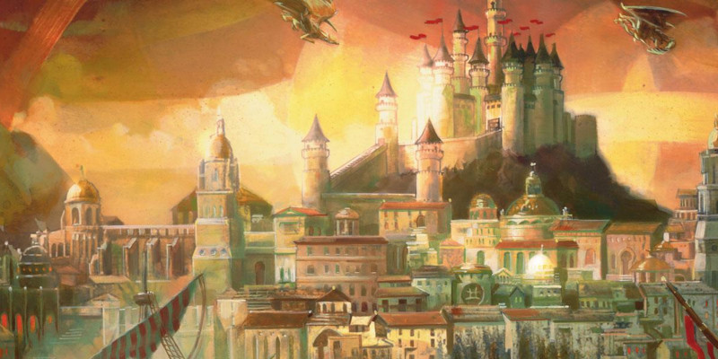

De la signification des niveaux
Comme vous le constaterez à la lecture, cet article se base sur la version 3.5 des règles de D&D. Mais le concept reste intéressant même pour D&D 5.
Le cadre de campagne et les PJ
Les aventures des personnages joueurs s’articulent en général autour de deux environnements, le scénario d’une part et le cadre de campagne d’autre part. L’un des talents d’un bon maître de jeu est d’arriver à faire oublier les frontières entre les deux. Moins les joueurs arrivent à identifier au premier coup d’œil ce qui relève de l’histoire technique (le scénario) de ce qui relève du décor (le cadre de campagne), plus l’immersion des personnages s’en trouve renforcée.
Pour les scénarios, les difficultés des rencontres et des obstacles ainsi que les récompenses trouvées sont évaluées par rapport au niveau des personnages. Un groupe d’un niveau donné affrontera des obstacles évalués par rapport à son niveau, avec de l’équipement correspondant à son niveau, pour des récompenses évaluées selon son niveau. Pour le décor de campagne en revanche, il n’y a pas de raison que celui-ci suive en niveau de puissance celui des personnages. C'est-à-dire que si les personnages quittent une ville pour écumer les donjons puis reviennent quelques temps plus tard avec cinq niveaux de plus, il n’y a aucune raison que tous les personnages non joueur de la ville se retrouvent eux aussi avec cinq niveaux supplémentaires.
Cette réflexion peut également être étendue aux sites clefs du décor de campagne, telle une tour ou une ville réputée pour sa dangerosité et que tout le monde évite prudemment. Si des fois il passe par la tête des PJ d’aller voir pourquoi le site est réputé dangereux, il n’y a pas de raison pour que le niveau des rencontres soit automatiquement aligné sur le leur. Ou bien encore les rencontres aléatoires, ces fameuses rencontres aléatoires, étalées dans des tableaux qui prennent en compte le milieu physique (ville, plaine, forêt, montagne, marais…). Là encore il n’y a aucune raison que le niveau de ces rencontres aléatoires soit corrélé au niveau des personnages. C’est même tout le contraire.
Si une région ne connaît pas de population d’ogres, de géants ou de dragons, il n’y a pas de raison pour que, juste du fait que ces monstres deviennent des rencontres abordables pour les PJ, ils apparaissent soudainement dans les tables de rencontres aléatoires. Et à l’inverse, si une région est réputée pour ses maraudeurs géants des collines, il n’y a pas de raison pour que, juste du fait que ces monstres ne sont pas des rencontres abordables pour les PJ, ils n’apparaissent pas dans les tables de rencontres aléatoires.
Quelques questions à se poser
En d’autres termes, il n’y a pas de corrélation entre le niveau du groupe de personnages joueur (les PJ) et le niveau des personnages non joueur (les PNJ) de leur environnement hors aventure. Cet environnement répond à sa propre logique qui n’est pas liée au niveau des PJ. Aussi est-il important de comprendre la signification des niveaux dans un environnement normal et typique d’un monde de Dungeons & Dragons, dépouillé des PJ, en se posant les questions comme :
- Comment se répartissent les niveaux à l’intérieur d’une population standard ?
- Quel est le taux de classes de PJ à l’intérieur de cette population standard ?
- À partir de quel niveau est-on capable d’exploits dignes de héros tels que des XIII, John McLane et autres agents de l’IMF de John Woo ? Et capable d’exploits dignes des super-héros de comics ou de manga ?
- Que veut dire être niveau 1 ? Être niveau 5, niveau 10 et niveau 20 ?
L’analyse qui suit exploite les données fournies dans le Guide du Maître 3.5. Cet ouvrage propose une richesse d’informations cachées au détour de paragraphes anodins et au sein de ses tableaux. Concernant les règles antérieures et postérieures à D&D 3, cela doit être vu au cas par cas. Cependant, cela ne retire en rien la généralité des questions à se poser. Une fois dressé le panorama de la fréquence des niveaux et des catégories d’exploits associés, il est possible d’identifier des intervalles de niveaux qui présentent une cohérence d’ensemble. Ou autrement dit, d’utiliser les niveaux à leur juste signification.
L’environnement par défaut évoqué
Le Guide du Maître aborde le sujet de la place des personnages dans leur environnement au chapitre 5. On y lit dans l’encart que ce chapitre considère que l’environnement des PJ « est assez réaliste ». Malgré la présence de magie ou de dragons, les lois physiques sont respectées, et les humains normaux sont capables des mêmes exploits que ceux du monde réel. Le but affiché est de proposer un environnement de type médiéval familier pour les joueurs. On y lit également, dans la description des troupes, que les individus dotés de classes de personnages et les individus de niveau supérieur au niveau 1 sont des individus d’élites. Il faut y comprendre que les PNJ de niveau 1 et dotés de classe de PNJ forment la majorité de la population d’un monde classique de D&D, ce sont les habitants normaux, capables de faire des choses normales.
Les tables de générations des communautés
Intéressons-nous plus particulièrement à la génération de villes, avec la répartition de la population en classes et niveaux. Deux tableaux permettent de déterminer pour chaque classe de PJ et de PNJ le représentant de plus haut niveau en fonction de la taille de l’agglomération.
Un petit coup d’œil à la table PNJ de plus haut niveau permet de constater que le dé utilisé est d’autant plus grand que la classe est réputée être courante. La note sur le barbare et le moine est à ce propos on ne peut plus claire : si la communauté se trouve dans leur milieu d’origine ou de prédilection, le dé associé passe du d4 au d8. On a ainsi des d3 ou des d4 pour les ensorceleurs, magiciens, paladins ou rôdeurs, classes réputées rares ; et on a des d8 pour les guerriers et roublards, classes réputées courantes. Et si on regarde les classes de PNJ, les experts ont droit à 3d4 et les gens du peuple à 4d4.
Les communautés rurales
Cette valeur de 5% doit être comprise comme le fait que les communautés rurales sont naturellement susceptibles d’accueillir des représentants des classes de rôdeur et druide de haut niveau, plutôt que de les trouver seulement concentrées en ville. Et certainement pas que ces deux classes ont une surreprésentation par rapport aux autres classes. Les 5% sont un artifice pour faciliter l’apparition de tels PNJ dans les communautés rurales que croisent les PJ.
Un petit coup d’œil à la table des modificateurs liés à la communauté nous permet de constater que plus la taille de la communauté est importante, plus le niveau moyen des PNJ de plus haut niveau de la communauté sera élevé.
Les communautés rurales sont assorties d’un malus (de -3 à -1) et le dé classique pour déterminer un PNJ doté d’une classe de personnage tourne autour du d4 et du d6. On comprend qu’il y aura peu chance de trouver des classes de PJ en milieu rural en dehors des guerriers et roublards (en effet, si le jet modifié est de 0 ou moins, la classe n’est pas présente), et ceux présents seront de très faible niveau. Notez que ces communautés rurales peuvent abriter un druide ou un rôdeur de haut niveau, le modificateur normal de la communauté pouvant être remplacé par +10 dans 5% des cas.
Les communautés urbaines
Vouloir gérer par un même jet à la fois la fréquence de la classe dans la communauté et le plus haut niveau de son représentant amène à cet étrange résultat que les gens du peuple sont la classe qui atteint le plus facilement les plus hauts niveaux. Il faut croire que la vie tranquille sans aventure est plus propice au gain de niveaux...
Regardons les communautés urbaines. Le bourg est la taille de communauté sans ajustement. La ville importante a un ajustement de niveau de +3. Puis chaque taille de communauté au-dessus se voit ajouter 3 points au modificateur et 1 PNJ de plus haut niveau par classe supplémentaire, jusqu'à +12 pour la métropole et 4 PNJ de plus haut niveau par classe.
On voit que contrairement aux communautés rurales où le modificateur ne varie que de un point entre chaque taille de communauté, ici au contraire, changer de taille de communauté a une influence forte sur le niveau moyen des PNJ de plus haut niveau rencontré. En effet avec un +3 de différence on a à peu près l’équivalent de la valeur moyenne du dé associé à la classe, et même pour certaines égale au dé (d3 et d4). Auquel vient s’ajouter l’addition d’un jet supplémentaire à chaque transition de taille. On voit bien ici que le nombre de villes et surtout la proportion de villes entre chaque catégorie de taille de communauté urbaine va avoir un impact sur la répartition et le nombre de PNJ de haut niveau. Ceci est à mettre en corrélation avec la petite note sur la disponibilité des lanceurs de sorts selon la taille des communautés, sous l’entrée Sorts de la table Lancements de sorts et services dans le Manuel des Joueurs 3.5, raccord avec les résultats de population de lanceurs de sorts donnés par le Guide du Maître.
Ce que dit le Guide du Maître sur la répartition des populations
On nous dit dans le Guide du Maître la chose suivante : la population qui vit dans une communauté de type ville importante et plus grande (soit plus de 2 000 habitants adultes) représente entre 1/15ème et 1/10ème de la population qui vit dans des communautés qui ne dépassent pas la taille d’un bourg (moins de 2 000 habitants adultes). Soit environ 6% à 9% de la population d’un monde de D&D vit dans des villes. Pour le reste, le Guide du Maître ne nous précise pas plus les proportions de chaque type de communautés les unes par rapport aux autres. Dans ce cas tournons-nous alors vers l’Europe du Moyen Âge puisqu'il s’agit du cadre auquel font références les règles. Quel est le pourcentage de population qui vit dans une communauté urbaine ? Combien compte-t-on de cités et de villes par million d’habitants ? Et combien peut-on trouver de grandes villes et de villes importantes en proportion pour un million d’habitants ?
L’urbanisation au Moyen Âge
Le bourg est une « innovation » de l’expansion urbaine du Moyen Âge, il date de cette époque. Les villes sont un héritage des temps plus anciens. Parce que la création d’un bourg représentait un véritable avantage économique pour les seigneurs de l’époque, ces derniers concédaient des privilèges à ceux qui accepteraient de venir le peupler et le développer (et par conséquent remplir plus facilement les caisses du seigneur). Les villes étaient jalouses de ces privilèges accordés aux bourgeois, certaines revendiquèrent leur propre charte auprès de leurs seigneurs, et ça ne s’est pas toujours très bien passé...
Il n’y a pas de lien entre le terme bourg dans le Guide du Maître et le véritable bourg du Moyen Âge. Dans D&D il définit une taille de communauté urbaine ; au Moyen Âge il définissait un mode de création d’une communauté urbaine.
La ligne ville importante correspond en moyenne et en ajoutant la population non-adulte à une ville d’environ 5 000 habitants (la population non-adulte représente environ 25% de la population au Moyen Âge, le Guide du Maître, lui, propose entre 10% et 40% selon les races, sans préciser plus). La ligne bourg correspond en moyenne et en ajoutant la population non-adulte, à une ville de 2 000 habitants. Si on en croit les quelques informations glanées à gauche à droite sur le sujet, le taux de population urbaine (2 000+ habitants) au Moyen Âge pendant la période de croissance démographique (1000-1340) tournait autour de 13-15%. En croisant les 6% à 9% de la population vivant dans les villes importantes d’après le Guide du Maître et les 13 à 15% de population urbaine au Moyen Âge, on peut déjà attribuer 6% de la population aux bourgs.
Villes et cités du Moyen Âge
Selon Paul Bairoch, en l’an mille, il y avait entre 27 et 31 villes de plus de 20 000 habitants pour une population de 30 à 34 millions d’habitants en Europe et en 1340 environ 83 à 88 villes de plus de 20 000 habitants pour une population de 70 à 74 millions d’habitants. Soit environ 1 ville de plus de 20 000 habitants (lignes cité et métropole) pour 1 million d’habitants. Dans la revue Les Cahiers de Science et Vie sur la ville au Moyen Âge (n°120 de décembre 2010), on y apprend notamment qu’autour de l’An Mille, on comptait environ 120 villes de plus de 10 000 habitants pour environ 23 millions d’habitants pour l’Europe occidentale. Si on compare aux 30 villes de plus de 20 000 habitants pour 30 millions d’habitants ci-dessus, on voit qu’il existe en gros un facteur 4 entre le nombre de villes comprises entre 10 000 et 20 000 habitants (ville importante) et les villes de plus de 20 000 habitants (cité et métropole).
Pour les communautés rurales, il est difficile de trouver des éléments pour juger du nombre de lieux dits par hameau, du nombre de hameaux par village, ou encore du nombre de villages par bourg. Mais pour tout dire cela n’influe qu’à la marge sur le taux d’individus de niveau supérieur à 1. La variation du modificateur lié à la communauté est faible et ne va jouer que sur les proportions relatives des petits niveaux, (entre 1 et 3).
Mon cheval pour un royaume…
Imaginons un duché de type médiéval européen typique, avec une région d’environ 1 million d’habitants adultes. Ce qui correspond à l’unité de base pour trouver une agglomération de plus de 20 000 habitants comme vu ci-dessus. Cette agglomération est un montage statistique constitué pour 20% d’une métropole et pour 80% d’une cité, si on conserve le rapport de un pour quatre trouvé au-dessus. Je répartis le reste des 8% de la population dans les villes importantes et les grandes villes, en gardant le même rapport de progression entre les deux. J’attribue 6% de la population pour les bourgs, et le reste des 86% se répartit entre les différentes communautés rurales (- de 900 habitants adultes). En considérant 4 lieux dits par hameau et 4 hameaux par village.
Le tableau ci-dessous récapitule le nombre de communautés de chaque taille obtenu par ce calcul. Les nombres de communautés sont arrondis à l’entier le plus proche. La colonne population moyenne correspond à la quantité moyenne de population pour une communauté de cette taille.
| Taille de la communauté | Population moyenne | Nombre de communautés | Population totale |
|---|---|---|---|
| Pop. Urbaine | 80 000 | 13 | 79 891 |
| Métropole | 37 500 | 0,20 | 7 500 |
| Cité | 18 500 | 0,80 | 14 800 |
| Grande Ville | 8 500 | 3 | 25 670 |
| Ville importante | 3 500 | 9 | 31 921 |
| Pop. Non urbaine | 920 000 | 7 540 | 920 581 |
| Bourg | 1 450 | 41 | 60 030 |
| Village | 650 | 357 | 232 099 |
| Hameau | 240 | 1 428 | 342 792 |
| Lieu-dit | 50 | 5 713 | 285 660 |
| Total | 1 000 000 | 1 000 472 |
Comparons à des équivalents réels
Un million d’habitants, avec disons quelque chose comme 30-32 habitants/km², c’est une densité honorable, le royaume est prospère. Cela donne environ une superficie de 30 000 à 33 000 km², comme la superficie de régions modernes comme la Bourgogne ou la Bretagne. Un million d’habitants c’est également la population du royaume d’Angleterre (donc sans le Pays de Galles et l’Écosse) autour de l’An Mille.
Autres sources sur le sujet : la démographie de la France au Moyen Âge. Et cette page très pratique pour les rôlistes que nous sommes : la démographie médiévale facile, l’auteur y est plus restrictif sur le taux de population urbaine, ses paramètres favorisent les communautés rurales et mécaniquement baisse le taux d’individus de niveau supérieur à 1.
Prenons la Bretagne et superposons nos résultats sur son découpage administratif, avec 4 grandes villes dont la cité/métropole pour capitale, Rennes, et les trois autres grandes villes comme préfectures : Saint-Brieuc, Quimper et Vannes, et nos 13 villes en tout qui rayonnent pour 15 arrondissements. D'accord les subdivisions territoriales issues de la Révolution et de la 5ème République ne font peut-être pas trop médiévales. Dans ce cas, si on veut rester médiéval jusqu'au bout, comparons nos 13 villes aux 9 provinces traditionnelles bretonnes (évêchés) ou encore aux 11-12 comtés et vicomtés du duché.
La distribution obtenue pour les communautés urbaines (bourgs et plus) semble donc cohérente pour un environnement médiéval. Elle semble même un peu plus favorable au nombre de communautés urbaines, donc favorise l’apparition d’individus de niveau supérieur à 1.
Répartition des classes et des niveaux
Maintenant que nous avons le nombre de villes, villages, hameaux et lieux dits, déterminons la population qui les compose. Avec les nombres de communautés par type cités dans le tableau ci-dessus, on obtient les résultats suivants :
Nombre d'individus par niveau
| Taux | niv 1 | niv 2 | niv 3 | niv 4 | niv 5 | niv 6-9 | niv 10+ | Total | |
|---|---|---|---|---|---|---|---|---|---|
| Classes de PNJ | 88,4% | 789 927 | 49 240 | 19 004 | 10 049 | 5 977 | 8 445 | 1 433 | 884 076 |
| Adepte | 0,9% | 3 950 | 3 335 | 1 363 | 320 | 75 | 24 | 6 | 9 074 |
| Expert | 5,3% | 23 698 | 15 024 | 6 091 | 3 312 | 1 701 | 2 764 | 68 | 52 657 |
| Gens du Peuple | 76,6% | 718 834 | 23 164 | 8 972 | 5 264 | 3 568 | 5 451 | 1 344 | 766 597 |
| Homme d’armes | 5,1% | 39 496 | 7 081 | 2 456 | 1 129 | 624 | 192 | 10 | 50 989 |
| Noble | 0,5% | 3 950 | 636 | 123 | 24 | 9 | 14 | 5 | 4 759 |
| Classes de PJ | 11,6% | 75 168 | 25 631 | 9 494 | 3 105 | 2 180 | 757 | 62 | 116 396 |
| Barbare | 0,4% | 3 279 | 636 | 123 | 24 | 9 | 14 | 5 | 4 089 |
| Barde | 1,4% | 9 290 | 3 335 | 1 363 | 320 | 75 | 24 | 6 | 14 415 |
| Druide | 1,4% | 9 290 | 3 335 | 1 363 | 320 | 75 | 24 | 6 | 14 415 |
| Ensorceleur | 0,4% | 3 279 | 636 | 123 | 24 | 9 | 14 | 5 | 4 089 |
| Guerrier | 2,7% | 16 071 | 6 354 | 2 421 | 1 019 | 953 | 302 | 9 | 27 128 |
| Magicien | 0,4% | 3 279 | 636 | 123 | 24 | 9 | 14 | 5 | 4 089 |
| Moine | 0,4% | 3 279 | 636 | 123 | 24 | 9 | 14 | 5 | 4 089 |
| Paladin | 0,1% | 1 047 | 201 | 36 | 13 | 7 | 13 | 3 | 1 321 |
| Prêtre | 1,4% | 9 232 | 3 306 | 1 363 | 306 | 75 | 24 | 6 | 14 313 |
| Rôdeur | 0,1% | 1 047 | 201 | 36 | 13 | 7 | 13 | 3 | 1 321 |
| Roublard | 2,7% | 16 071 | 6 354 | 2 421 | 1 019 | 953 | 302 | 9 | 27 128 |
| Total | 100% | 865 095 | 74 870 | 28 498 | 13 154 | 8 157 | 9 202 | 1 496 | 1 000 472 |
| Taux | 86,5% | 7,5% | 2,8% | 1,3% | 0,8% | 0,9% | 0,15% | 100% |
Analyse des résultats
- les classes de PJ représentent 11,5% de la population
- les individus de niveau 1 représentent 86,5% de la population
- les individus de niveau 2 représentent 7,5% de la population
- les individus de niveau 3 représentent 3% de la population
- les individus de niveau 5 et plus (classes PJ+PNJ) ne représentent pas plus de 2% de la population (1 personne sur 50) et pour les seules classes de PJ 0,3% (1 personne sur 300)
- les individus de niveau 10 et plus représentent environ 0,15% de la population (1 personne sur 700) et pour les seules classes de PJ seulement 1 personne sur 16 000 (même pas 0,01%)
- les individus de classes de PJ de niveau 12 et plus sont à peine 30 toutes classes confondues pour un million d’habitants (1 individu sur 30 000) soit deux ou trois lanceurs de sort de chaque type, et encore rien n’assure qu’il y ait des individus de niveau 18 capable de lancer des sorts de niveau 9 parmi eux !
- les paladins ou les magiciens sont environ 1 300 individus, dont un peu plus de 1 000 de niveau 1 et pas plus d’une vingtaine de niveau 5+. Et un ou deux commandeurs/mages de niveau 12+
D'autres choix de proportions entre les communautés rurales modifient les pourcentages obtenus, mais cela reste à la marge. Notamment, si on favorise un maillage de communautés de faibles populations (lieux dits et hameaux) aux regroupements de populations (bourgs, villages), le taux d’aventuriers (classes de PJ) dans la population augmente de +1%. Faut-il y voir là une désaffection des citadins pour la vie d’aventurier...
On voit que les individus dotés de classes de PJ représentent une personne sur 9, et passé le niveau 5 ils sont des individus rares : 0,3% de la population, et passé le niveau 10, ils sont encore plus rares, 1 personne sur 16 000 (même pas 0,01%) ! Les individus dotés de classe de PNJ et de niveau 1 représentent quatre personnes sur cinq.
Les soldats professionnels classiques (guerriers et hommes d’armes) sont environ 80 000 individus dont deux tiers de niveau 1 et deux tiers sont des hommes d’armes. Cela représente environ 8% de la population, c’est très largement suffisant pour fournir le 1% de la population dévolue aux activités de garnison permanente, le nombre de guerriers niveau 1 peut y suffire, et aux 5% d’autres hommes mobilisables/milices (selon le Guide du Maître). Et 8% de soldats professionnels dans la population c’est largement plus que les capacités d’entretien des armées du Moyen Âge cela dit au passage.
La rareté des niveaux
Reprenons l’Europe des Pyrénées aux Marais du Pripet présenté ci-dessus avec ses 32 millions d’habitants et ses 30 villes de plus de 20 000 habitants (6 métropoles + 24 cités) et ses 120 villes de 10 000 à 20 000 habitants (grandes villes) de l’An Mille et considérons là comme un monde de D&D pour ce qui concerne la répartition des classes dans la population. On trouverait en tout et pour tout pas plus de 200 magiciens et 200 prêtres de niveau 9+, donc capables de lancer des sorts de niveau 5 et plus, dont pas plus d’une petite trentaine de magiciens et une cinquantaine de prêtres de niveau 13+ capables de lancer des sorts de niveau 7 et plus. Et enfin une petite dizaine de magiciens et une petite trentaine de prêtres de niveau 15+. Pour toute l’Europe, pas seulement la France, l’Italie ou l’Allemagne, non , pour toute l’Europe.
Un PJ qui atteint ces niveaux 10+ est quelqu'un d’exceptionnel, il n’aura que quelques dizaines d’équivalents PNJ. Avec une telle rareté et une telle puissance, à moins de vivre en ermite coupé du monde, il sera remarqué et connu du reste de la population et de ses pairs PNJ. Et vu ses aptitudes professionnelles hors du commun, on peut se douter qu’on exigera de lui de porter sa charge de responsabilité dans le bon fonctionnement de la collectivité. Un grand pouvoir implique de grandes responsabilités.
La renommée associée
Si on s’en réfère au modificateur de communauté pour déterminer le PNJ de plus haut niveau, on peut raisonnablement penser que des PJ de niveau 13+ vont intéresser leurs pairs, donc les PNJ de plus haut niveau de la métropole de leur région, et que ces derniers vont en parler autour d’eux à leurs contacts, leurs pairs des métropoles voisines avec lesquels ils sont en commerce, où tout simplement que ces derniers entendront parler des PJ par leur réseau d’espions auprès de leurs pairs des métropoles voisines. En partant de cette idée, on voit qu’un personnage de niveau 13 sera connu au moins de réputation de l’équivalent de toute l’Europe (6 métropoles). Et vu que les lanceurs de sorts de haut niveau arrivent à avoir des contacts dans les plans, il n’est pas impossible d’imaginer que cette renommée dépasse les frontières du plan matériel.
Un personnage de niveau 10+ sera connu de réputation dans toute la région d’une métropole (4-6 cités) soit environ une région de cinq millions d’habitants (un tiers de la France). Un personnage de niveau 7+ sera connu de réputation dans la région de 4-6 grandes villes, une région d’environ un million d’habitant (l’Angleterre de l’An Mille). Un personnage de niveau 4-6 sera connu de réputation dans la région de 4-6 villes importantes. Connu de réputation ne veut pas dire que tout le monde le reconnaîtra dans la rue, on en est pas encore au stade de la célébrité télévisuelle. Mais à minima, tout le monde aura entendu parler d’au moins un de ses exploits sans forcément avoir de nom à associé. Certains auront le nom associé à l’exploit, les mieux informés auront également une description voir un portrait à mettre sur ce nom et ces exploits.
Compétences de métiers
D'autres que moi ont pris le soin de se pencher sur la question et je vous renvoie à ce propos à l’article de Justin Alexander : D&D calibrating. L’article n’est pas neutre, il défend une thèse, celle de la vraisemblance du système de jeu D20, les choix d’exemples sont par conséquent orientés dans ce sens. On y adhère ou non, mais parmi les conséquences secondaires qui n’apportent rien à la thèse portée par l’auteur, il en ressort une véritable réflexion sur l’interprétation et le sens des niveaux. Pour résumer il en ressort si on se base sur les classes de PNJ :
- Un PNJ de niveau 1 sans connaissance professionnelle approfondie, sans le don Talent, tourne aux environs de +4 de bonus de compétence dans son « activité de métier ». Il réussira les tâches faciles (DD 10) mais sans être certain d’aboutir les tâches délicates du premier coup (DD 15), les tâches difficiles lui demanderont de gros efforts sans certitude de réussite (DD 20). Enfin, les tâches formidables sont hors de sa portée.
- Un PNJ de niveau 1 avec une connaissance professionnelle, avec le don Talent (+3) et du vrai matériel, ou un apprenti (outils de maître ou aide +2) aura un bonus de compétence de +10 dans son domaine professionnel (accordons-lui qu’il bénéficie d’un bonus de +1 par sa caractéristique associée). Il est capable de passer des DD 20 en choisissant de Faire 10, soit un artisan capable de faire des objets de qualité/maître, un érudit capable de répondre à des questions Difficiles, ou un saltimbanque de réputation locale (DD 20).
- Un PNJ de niveau 3 qui s’en donne les moyens (toujours le don Talent) sera un professionnel doté d’une meilleure aisance (bonus de synergie), et de spécialisations étendues (don supplémentaire du niveau 3 = nouveau Talent par exemple). Il aura un bonus de compétence entre +13 et +15 dans son domaine de prédilection et sans doute environ la moitié dans un domaine annexe. Un artisan n’échouera jamais la création d’un objet normal (DD 12 ou 15) et ne gâchera jamais les matières premières pour faire un objet de maître. Un saltimbanque sera de réputation nationale (DD 25).
- Un PNJ de niveau 5 avec un +16 à +18 de bonus de compétence sera une sommité dans son domaine c’est le saltimbanque de renommée nationale (DD 25) et plus, internationale voir au-delà du plan matériel (DD 30), c’est l’érudit qui peut répondre sans problème aux questions difficiles et sera même capable de répondre aux questions très difficiles (DD 30). Pour les athlètes, ils sont capables des prouesses de nos plus grands champions. Bref ce sont des individus très exceptionnels selon nos critères du monde réel et en fait les DD qu’ils sont en mesure de battre (DD 30) les qualifient bien d’Héroïque.
| Artisan (artisanat) | niv 1 | niv 1 pro | niv 3 pro | niv 5 pro | Érudit (connaissance) | niv 1 | niv 1 pro | niv 3 pro | niv 5 pro | |
|---|---|---|---|---|---|---|---|---|---|---|
| Degrés de Maîtrise | 4 | 4 | 6 | 8 | Degrés de Maîtrise | 4 | 4 | 6 | 8 | |
| Talent | +0 | +3 | +3 | +3 | Talent | +0 | +3 | +3 | +3 | |
| Mod. Caract. | +0 | +1 | +2 | +3 | Mod. Caract. | +0 | +1 | +2 | +3 | |
| Outils de Maître | +0 | +0 | +2 | +2 | Outils de Maître | +0 | +0 | +2 | +2 | |
| Aide | +0 | +2 | +2 | +2 | Aide | +0 | +2 | +2 | +2 | |
| Total | 4 | 10 | 15 | 18 | Total | 4 | 10 | 15 | 18 | |
| Faire 10 | 14 | 20 | 25 | 28 | Faire 10 | 14 | 20 | 25 | 28 | |
| Maximum | 24 | 30 | 35 | 38 | Maximum | 24 | 30 | 35 | 38 |
| Commerçant (profession) | niv 1 | niv 1 pro | niv 3 pro | niv 5 pro | Artiste (représentation) | niv 1 | niv 1 pro | niv 3 pro | niv 5 pro | |
|---|---|---|---|---|---|---|---|---|---|---|
| Degrés de Maîtrise | 4 | 4 | 6 | 8 | Degrés de Maîtrise | 4 | 4 | 6 | 8 | |
| Talent | +0 | +3 | +3 | +3 | Talent | +0 | +3 | +3 | +3 | |
| Mod. Caract. | +0 | +1 | +2 | +3 | Mod. Caract. | +0 | +1 | +2 | +3 | |
| Outils de Maître | +0 | +0 | +0 | +0 | Outils de Maître | +0 | +0 | +2 | +2 | |
| Aide | +0 | +2 | +2 | +2 | Aide | +0 | +2 | +2 | +2 | |
| Total | 4 | 10 | 13 | 18 | Total | 4 | 10 | 15 | 18 | |
| Faire 10 | 14 | 20 | 23 | 26 | Faire 10 | 14 | 20 | 25 | 28 | |
| Maximum | 24 | 30 | 33 | 36 | Maximum | 24 | 30 | 35 | 38 |
Il ne manque presque rien pour qu’un PNJ de niveau 5 soit capable de réussir des choses impossibles (DD 40+) et dans de rares cas, si toutes les conditions sont réunies (bonus de circonstance +2), ces individus rentrent dans la légende par une telle réussite tout à fait exceptionnelle (DD 40 = presque impossible). Lisez ou relisez le Guide du Maître pour vous faire une idée de la signification des DD, le dernier de la liste (DD 43) c’est quand même « Pister un gobelin sur de la roche nue, alors que la trace est vieille d’une semaine et qu’il a neigé la veille ». C’est tout simplement impossible à moins d’une aide technologique surspécialisée (ou de magie dans le cas de D&D).
Bonus raciaux
Les bonus raciaux aux compétences sont en général de +2, cela représente l’équivalent de l’apport d’un bonus de circonstance. Cela représente également l’équivalent de un ou deux niveaux (1 degré de maîtrise + 1 de modificateur de caractéristique ou 2 degrés de maîtrise).
Prenons le cas des nains, traditionnellement réputés pour leur grande compétence de maçons, mineurs, et forgerons. Ils bénéficient d’un bonus racial de +2 aux tests d’artisanat liés à la pierre ou aux métaux. Ce qui signifie qu’à développement de compétence égal à celui d’un humain, un nain fera le même travail qu’un humain avec un bonus de circonstance en moins. Par exemple un nain forgeron doté d’outils d’artisan normaux fera un travail aussi bon que celui d’un humain qui lui disposera d’outils de maître. C’est la marque du talent. Ou encore, si le nain forgeron et son collègue humain disposent des mêmes circonstances de travail, cela nous donne un forgeron nain qui serait l’équivalent d’un collègue humain d’un niveau ou deux de plus que le sien. Si on reprend la fréquence des niveaux vue précédemment, un nain de niveau 1 par exemple est aussi doué qu’un humain de niveau 2 ou 3 c’est-à-dire un humain sur dix. Ou autrement dit, n’importe quel nain forgeron est aussi doué que les meilleurs forgerons humains (en termes de niveaux). La réputation des nains, vu du point de vue des humains, n’est donc pas usurpée.
Les elfes sont réputés pour leurs sens. Et justement ils bénéficient d’un bonus racial de +2 dans les compétences liés aux sens. En d’autres termes n’importe quel elfe est aussi doué que le dixième supérieur de la population humaine. Cette réputation est là non plus pas usurpée.
L’apport des niveaux
On peut très raisonnablement avoir un regard critique sur la pertinence d’avoir développé sur 20 niveaux les classes de PNJ qui sont censées représenter les monsieur-tout-le-monde, les figurants qui animent le monde autour des héroïques PJ.
En fait personnellement je n’utilise que le premier niveau pour le gens du peuple, cette classe de PNJ sert pour toute cette masse de PNJ figurants sans particularité qui peuple le monde des PJ. Ce sont tous les PNJ sans nom, sans visage, sans couleur, sans talent particulier. S’il devait être assez particulier pour être de niveau 2 ou plus, alors il devient un expert. S’il devait être assez particulier pour être de niveau 5 ou plus, alors ces niveaux deviennent des niveaux de classe de PJ.
On parle jusqu'ici de PNJ dont toute l’expertise et le développement tourne autour de leur compétence de métier, ce qui n’est pas le cas de la majorité des gens du peuple de niveau 1. Les PJ courants, en bons aventuriers, sont des touche-à-tout - ils utilisent en général leurs dons pour autre chose que maîtriser un métier, c’est-à-dire prendre le don Talent. Ils n’atteindront sans doute pas aussi rapidement un tel niveau d’expertise dans une compétence, ils doivent maîtriser un éventail de compétences un peu plus large que le PNJ lambda pour espérer survivre. Un peu comme nos agents spéciaux experts qui maîtrisent plusieurs champs professionnels. Pour résumer, il ressort de cet article que le champ des possibilités ouvertes à des individus normaux, ou des humains réels, est couvert plus ou moins par les cinq premiers niveaux de personnage dans le système D20.
Et si on s’intéresse aux classes de PJ, ces dernières commencent à proposer des capacités vraiment exceptionnelles autour des niveaux 5 et 6 de classe : sorts de niveau 3, capacités de transformation du druide, mouvements surhumains du moine, guérison magique du paladin, esquive instinctive du barbare, augmentation du nombre d’attaques par round.
Au-delà on bascule dans le surhumain, d’abord ce sont les héros de nos films d’action modernes, capables des pires cascades et de s’en relever, puis les héros grecs, ces humains dotés d’un héritage divin d’une part et de telles aptitudes d’autre part que ce qu’ils accomplissent interpelle, voire rend jaloux les divinités elles-mêmes. Et enfin si on continue l’échelle, on tombe sur les aptitudes des super-héros des comics ou des mangas, capables de tomber de la stratosphère, de faire un cratère dans le sol ou de passer à travers les planchers en béton de quelques étages et de se relever malgré tout (comme le fameux barbare niveau 20 qui tombe de 100 m de haut et se relève).
Une proposition de classification des niveaux
Je propose ici une classification des catégories de niveaux. Elle n’est peut-être pas celle utilisée communément de nos jours, mais elle se base sur les éléments de classification traditionnels des versions de D&D du précédent millénaire : D&D Basic/Expert et AD&D, et les conseils de jeu donnés à l’époque dans Casus Belli première génération. Elle se base également sur les éléments qui ressortent des parties précédentes. La classification officielle des niveaux est très légère et ne s’embarrasse pas de chercher une cohérence dans un même intervalle de niveaux.
- Les bas niveaux (niveaux 1-4), ils vont se caractériser par un accès à une magie modérée, les lanceurs de sorts maîtrisent les sorts faciles d’accès et peu « court-circuiteurs » de scénarios de type recherche/enquête. L’équipement magique, lorsqu'il existe, est composé d’objets consommables. Les rapports des PJ avec la population environnante ne placent pas encore les PJ en champions ou héros d’une communauté, ce sont des individus performants mais pas encore les cadors des niveaux à venir, ils restent des individus normaux.
- Les niveaux moyens ou intermédiaires (niveaux 5-8), là c’est la gamme des explorateurs professionnels. Ils tiennent la dragée haute aux PNJ communs sans soucis, mais ils se font torcher par les dirigeants des communautés principales. La maîtrise de la magie assure une autonomie et une puissance de frappe aux PJ qui leur permet de se sortir des situations compliquées sans en faire des individus capables de fonctionner en totale autarcie (pas de transport instantané, pas de rappel à la vie). Les PJ ont encore toutes les bonnes raisons de parcourir les terres sauvages. Ça tombe bien c’est la gamme de niveaux étudiée pour. Les personnages dans cette tranche de niveaux commencent à s’équiper en objets magiques permanents et les lanceurs de sorts commencent à pouvoir créer leurs propres objets. Les PJ sont des individus exceptionnels, ce sont les héros des récits traditionnels ou les super-agents de nos sociétés modernes, l’élite de l’élite.
- Les hauts niveaux (niveau 9-12), là on rentre dans un autre monde. Les capacités de déplacements des personnages, leurs aptitudes à réparer l’échec ultime (rappel à la vie), les alliés potentiels et les capacités de divination, sont tels que des scénarios menés de façon classique ont peu d’intérêt. Dans leur environnement commun, dans les lieux de civilisation, ils sont du niveau des dirigeants (hormis les plus puissants et légendaires des grandes cités et métropoles). Ils ont de telles capacités qu’il est impensable que s’ils vivent dans une zone civilisée, il ne fasse pas partie de son élite dirigeante, selon leurs capacités (général d’une cité, grand prêtre ou magicien à la tête d’un temple ou d’une école, doge d’une guilde et entrepreneur talentueux, gardien d’une forêt, responsable d’une forteresse à la lisière de la civilisation, etc). Les objets magiques permanents commencent à gagner en puissance (objets intermédiaires), les armes magiques commencent à se voir ajouter des capacités en plus du simple modificateur +1.
- Les très hauts niveaux (niveaux 13 et +), là les personnages sont à proprement parler des légendes. Les principaux PNJ dirigeants des régions de ces niveaux ne sont qu’une poignée, et pas nécessairement plus élevé que 13-15 d’ailleurs. Les sorts auxquels ont accès les lanceurs de sorts sont capables de modifier en profondeur leur environnement immédiat, ils peuvent scanner et se déplacer virtuellement partout et même se déplacer dans les plans comme des grands. Ils ont accès aux objets magiques les plus puissants et les affrontements sont singulièrement létaux, mais ce n’est pas grave, ils ont les moyens de s’en remettre. Les personnages font partie de ceux qui font et qui modèlent le monde à leur image, ils peuvent faire ou défaire des nations, ce sont des héros mythiques, les super-héros des comics ou des mangas. Ils sont au stade où ils vont se frotter aux entités qui comptent dans les plans. Ils vont rentrer ou parasiter les plans de ces derniers concernant le plan primaire. Attention également à l’inflation en flèche des ressources, chaque nouveau niveau apporte vraiment une augmentation de la puissance des objets magiques.
Pourquoi faire des intervalles de niveaux ?
Je prends ici mon exemple personnel avec la campagne du Réveil des Seigneurs des Runes, une campagne qui s’étale du niveau 1 au niveau 17. Une très bonne campagne par ailleurs. Les trois premiers volumes passent impeccables, les activités et la place des PJ collent bien avec leurs niveaux qui évoluent au fil des ouvrages. Et puis à partir du 4ème volume, la machine se dérègle, je trouve que ça sonne faux, les PJ font partie des personnages de plus hauts niveaux de Varisie et ils continuent à faire le ping-pong comme lors de leurs premiers niveaux. La cohérence d’ensemble a disparue et le tout devient poussif, comme si il y avait quelque chose d’artificiel à mes yeux. Pourquoi ? Parce que la place que le scénario donne aux PJ dans l’environnement de jeu ne cadre plus avec mes attentes, c’est-à-dire avec mon approche des niveaux présentée ci-avant. En effet, je me retrouve avec des super-héros qui doivent faire comme s'ils étaient des individus normaux et anonymes ou presque. Bon ce n’est pas grave, comme je savais d’où venait la gêne, il était d’autant plus simple de faire les ajustements afin de calibrer correctement ensembles les PJ, l’environnement et les scénarios. À défaut vous aurez une impression d’insatisfaction, parce que l’utilisation que vous ferez du système de jeu ne sera pas en adéquation avec vos attentes. On peut toujours utiliser le système de jeu à contre-emploi, mais vous vous donnerez énormément de mal pour des résultats peu concluants si vous commencez à bidouiller le système de règles pour obtenir un style de rendu qui n’est pas couvert par l’intervalle de niveaux que vous souhaitez adopter.
Gérer les intervalles
Doit-on nécessairement rester à l’intérieur d’un intervalle et ne pas en sortir ? Après tout, si les PJ sont des individus normaux dans l’intervalle de niveaux 1 à 4, alors les faire passer dans l’intervalle du dessus en ferait des surhommes et par là même changerait leur nature profonde. Est-ce problématique ? Non, on peut passer d’un intervalle à l’autre, mais il faut bien garder en tête que les types d’aventures, le regard que les PJ porteront sur le monde qui les entoure, le regard que ce dernier portera sur eux et les capacités des personnages (voire même l’équilibre des classes) vont changer d’un intervalle à l’autre. Pas nécessairement de manière abrupte, la transition peut idéalement se faire sur le dernier niveau de l’intervalle précédent et le premier niveau de l’intervalle à suivre.
Seulement, à chaque changement d’intervalle de niveaux, vous devez vous poser la question de savoir si vous avez envie ou si vous vous sentez capable de faire jouer les nouveaux types d’aventures et les nouveaux environnements proposés par le nouvel intervalle. Et si oui, demandez aux joueurs s'ils sont prêts eux de leur côté à changer de mode de jeu de la même façon.
En tout état de cause, une fois que vous avez identifié l’intervalle de niveaux dans lequel vous et vos joueurs aimez jouer, exploitez-le à fond, ne faites cadeau d’aucun de ces niveaux aux joueurs à la création de leur personnage. Un niveau obtenu à la création du personnage n’apporte jamais autant de plaisir qu’un niveau gagné en cours de partie. À contrario, en choisissant comme niveau de départ la fin de l’intervalle précédent vous gâchez une partie du plaisir des joueurs, vous les obligez à commencer dans un intervalle qui n’est pas celui prévu pour le rythme de croisière, les joueurs vont devoir attendre toute une séance ou pire tout un niveau avant de commencer à tirer plaisir du type de parties promis avec l’intervalle vendu. Ainsi si on reprend les intervalles de niveaux définis ci-dessus, on constate que les niveaux de départ optimaux en termes d’amplitude des plages sont les niveaux d’entrée des intervalles : les niveaux 1, 5, 9 et 13.
Je vous invite à mener votre propre réflexion sur l’usage et la vision que vous avez à votre table de jeu des différents niveaux, sur l’expérience propre de votre table en la matière. Par exemple la notion de leader ou seigneur de communauté à partir d’un certain niveau n’existe pas dans D&D 3, mais elle fait, pour moi, partie des gênes de D&D, parce que présente dans AD&D, la version avec laquelle j’ai découvert D&D. Identifiez vos intervalles de niveaux de prédilection, comprenez bien de quelle nature sont les PJ dans ces intervalles et leur place dans le cadre de campagne, et profitez de votre D&D. Vos campagnes y gagneront en cohérence et le système D20 ne vous fera plus de misères.

Écrit par Orian